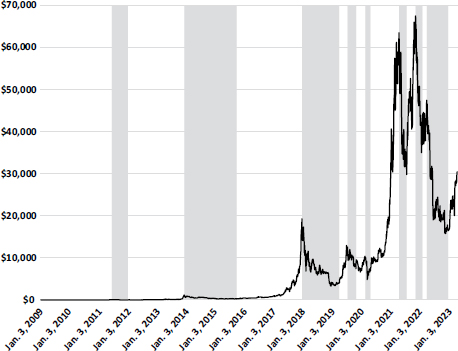
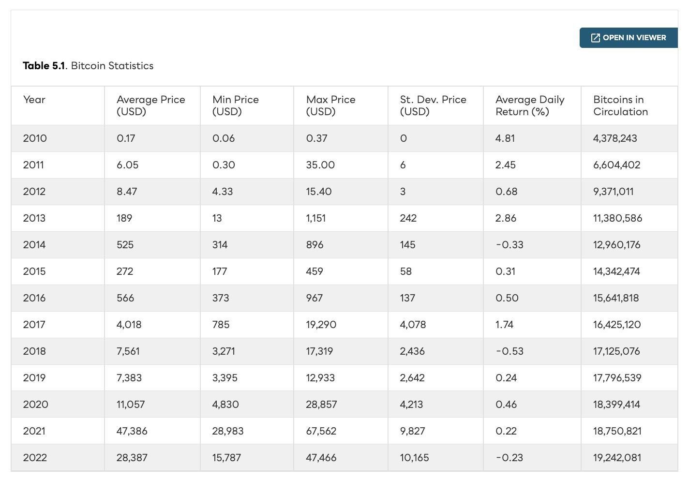
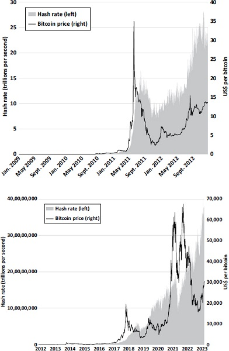
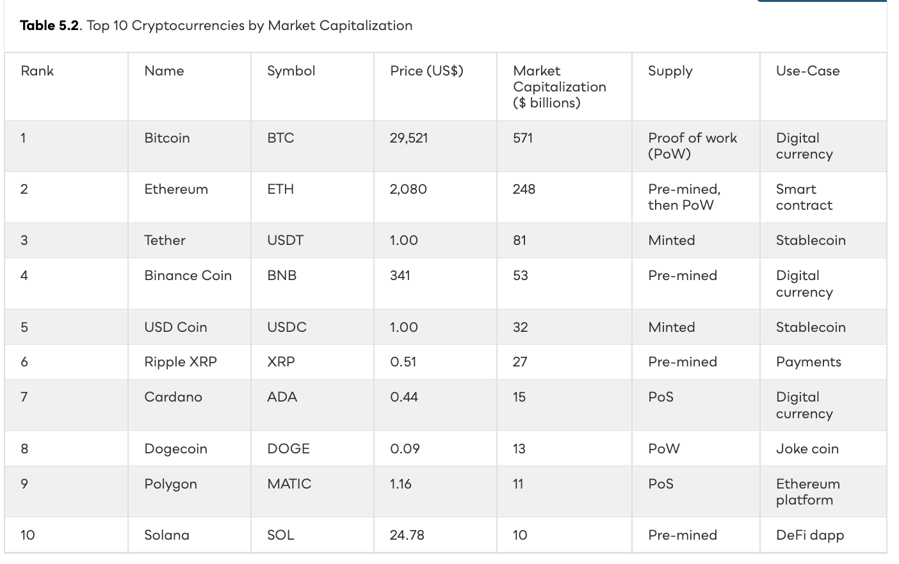
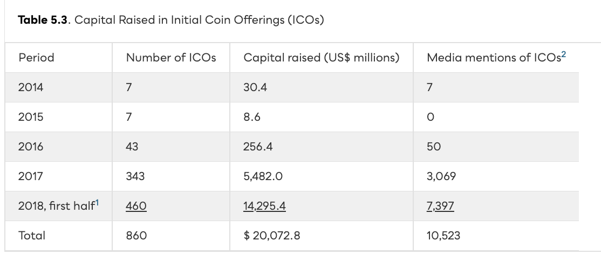
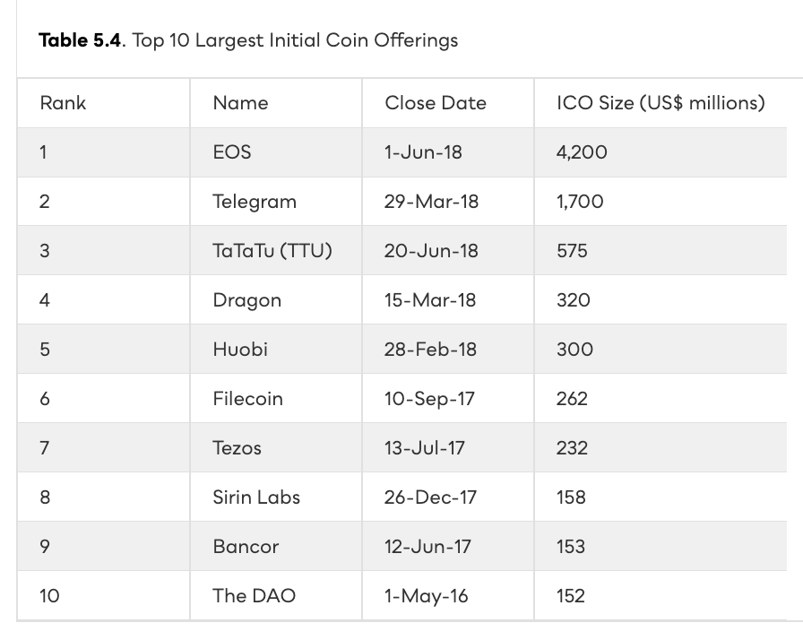
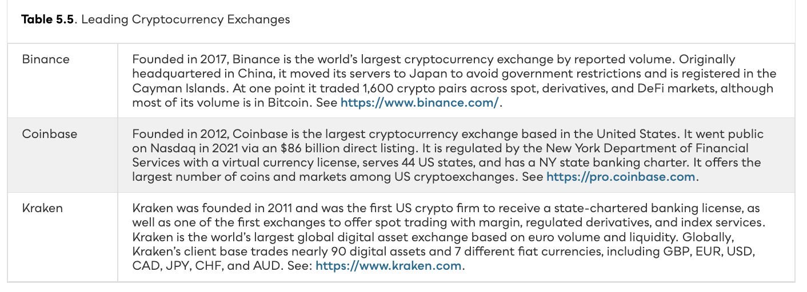
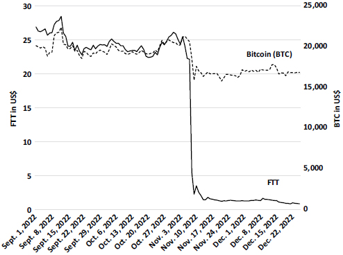
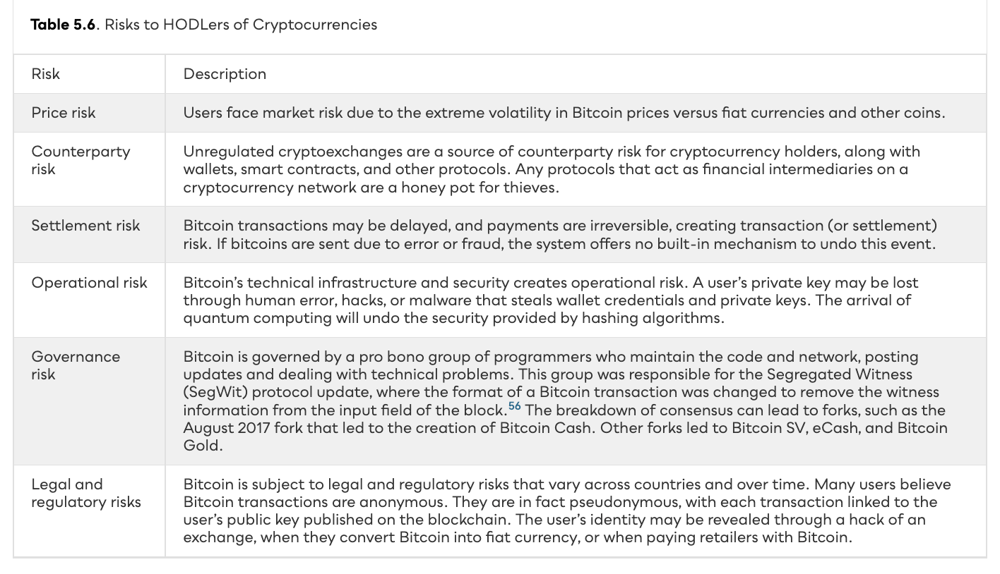
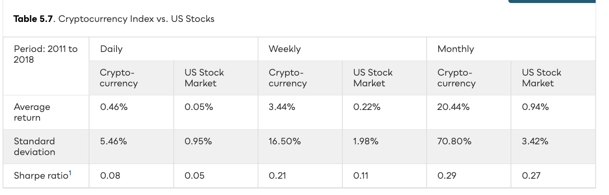

A cryptoasset is a digital asset whose ownership is recorded on a distributed ledger (blockchain) and secured by cryptography. Total market cap: $1.3T (Apr 2023), down from $2.0T at year-end 2021. Caveat emptor.
Bitcoin (BTC) emerged in 2009 as a response to the 2008 GFC. The genesis block referenced “Chancellor on Brink of Second Bailout for Banks.”


Earlier digital monies failed because no one could verify a coin had not already been spent — without a central mint. Satoshi’s solution: a time-stamped distributed ledger secured by cryptographic hashing.
Miners race to find a nonce that — when hashed with block contents — produces a hash with N leading zeros. The first to find it earns the block reward. Difficulty auto-adjusts to keep blocks 10 min apart.

Satoshi posted the source code on GitHub in 2009. Programmers cloned and modified it: Litecoin, Namecoin, Peercoin, Dogecoin, XRP. As of April 2023, 23,000+ coins. The top 10 = 79% of market cap.

ICOs let founders skip investment banks. A whitepaper online + a month-long subscription window = millions in BTC/ETH. The Ethereum crowdsale (mid-2014) raised $18.4M. The boom peaked in mid-2018 before regulators shut it down.


A cryptowallet stores private keys, not coins. Hot wallets (software) connect to the internet; cold wallets (hardware) keep keys offline. Trezor (2014) was the first hardware wallet. Cryptoexchanges — Binance, Coinbase, Kraken — trade 24/7 across 400+ unregulated venues.

FTX was the 3rd-largest cryptoexchange. SBF was crypto’s public face — testifying before Congress, lobbying regulators, donating $45M to politicians. Then a CoinDesk article exposed FTT-collateralized loans between FTX and Alameda. The run took 10 days.

Central banks are responding with digital fiat. The BIS reports 80+ countries are exploring CBDCs. Most focus on wholesale (interbank), not retail. Crypto enthusiasts are unimpressed.

Cryptoeconomics applies theory and empirics to Bitcoin and blockchain. Three findings dominate: trust is broken, the network cannot scale, and high volatility is structural — not transient.
Liu & Tsyvinski (2021) studied 1,700+ cryptocurrencies. Monthly return: 20.4% vs. 0.94% for US stocks. Standard deviation 70.8% vs. 3.42%. Risk-adjusted (Sharpe ratio) is comparable.

Satoshi solved double-spending with SHA-256 hashing, PoW mining, and a P2P ledger. Bitcoin spawned altcoins, ICOs raised $20B (mostly fraud), and cryptoexchanges became honey pots. Mt. Gox lost 850K BTC. FTX vaporized $32B in 10 days. Researchers find Bitcoin is structurally unstable but blockchain may still transform finance.